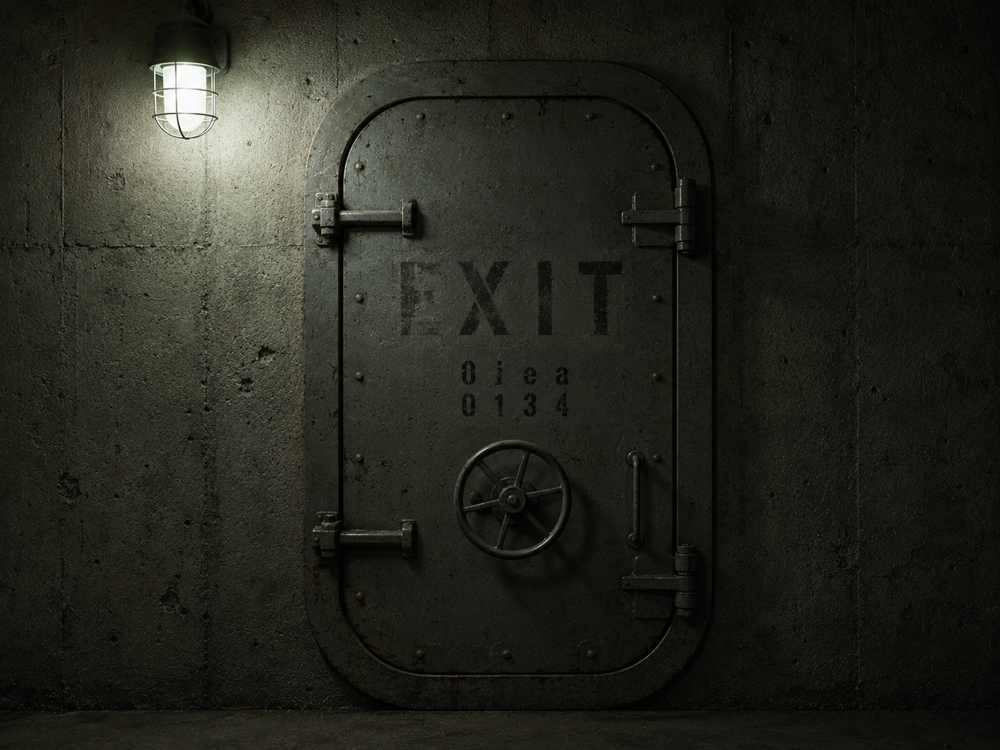

░░░░░░░░░░░░░░░░░░░░░░░░░░░░░░░░░░ · D E S C E N T · 02 / 40 · ░░░░░░░░░░░░░░░░░░░░░░░░░░░░░░░░░░

A roof of glass over a dead machine. It will not open. It was never a door. There is no way out the way you came.